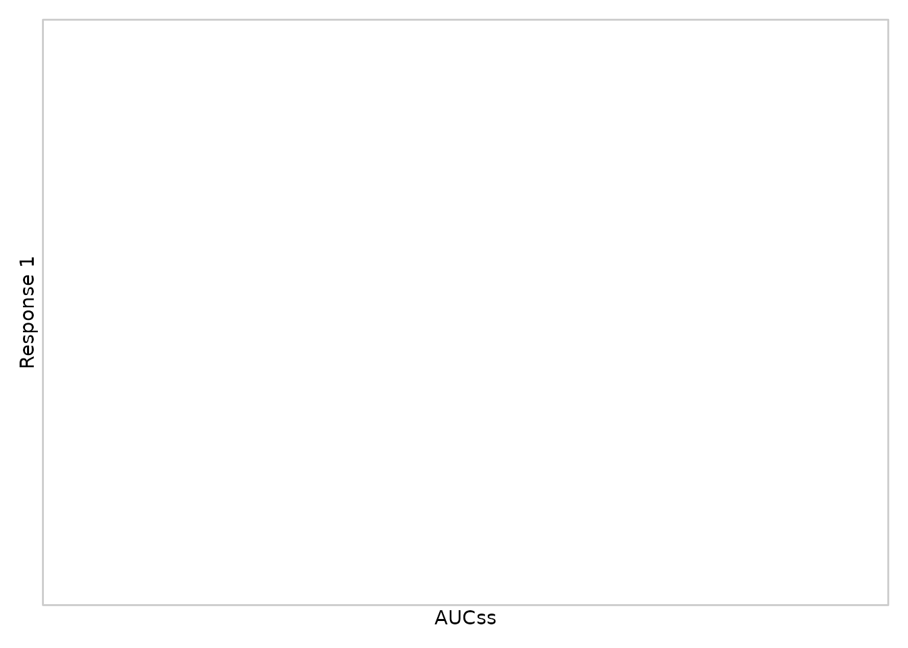
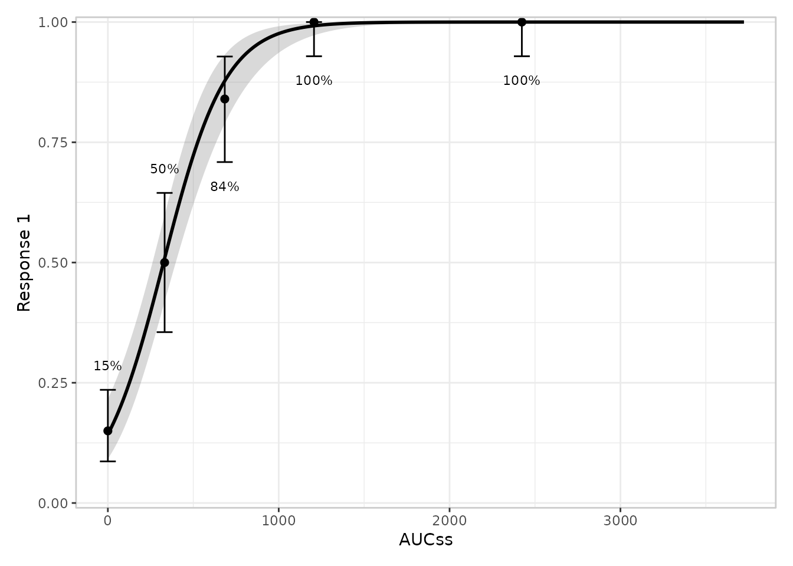
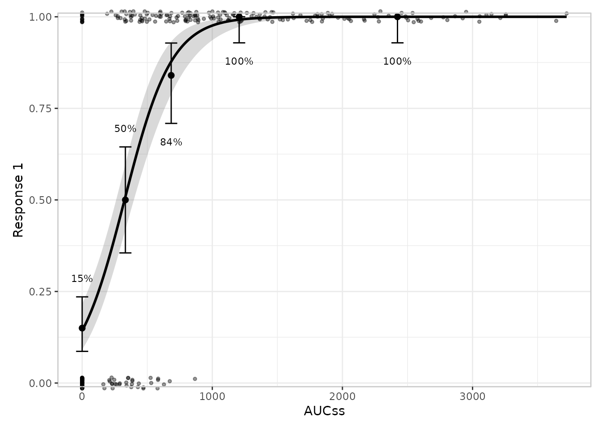
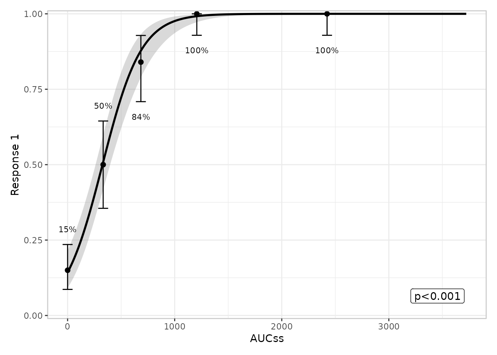
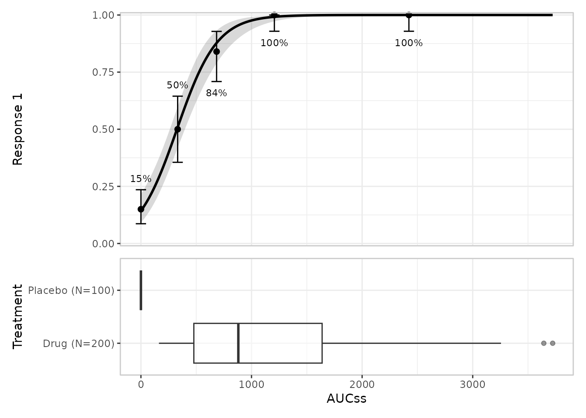
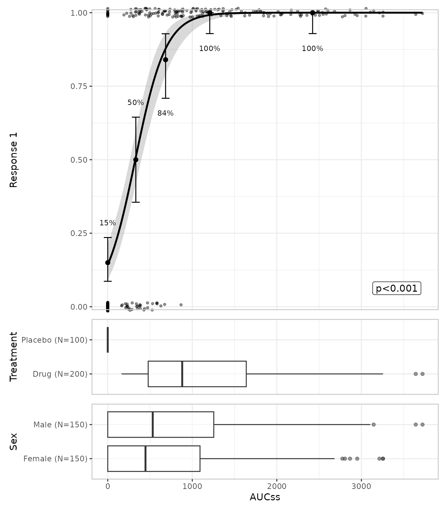
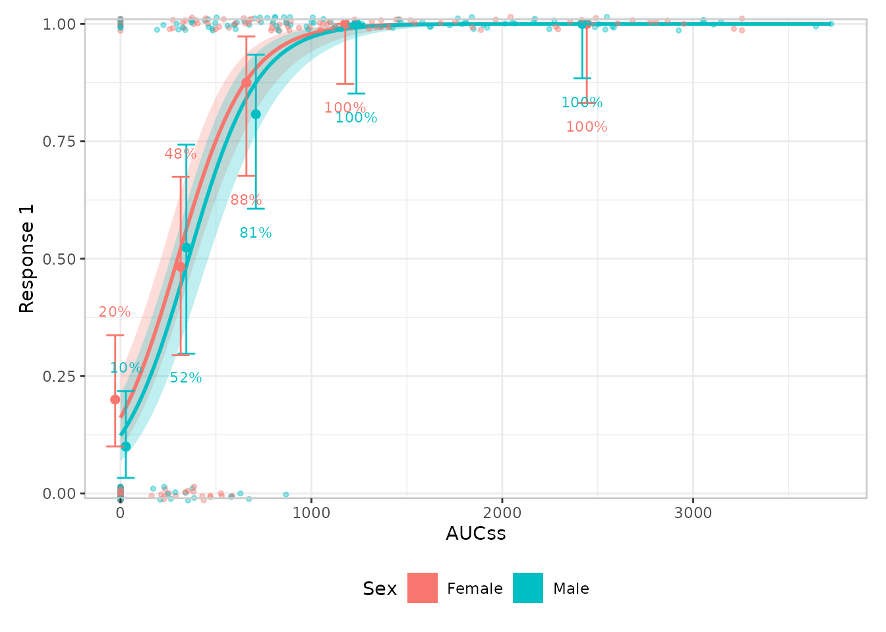
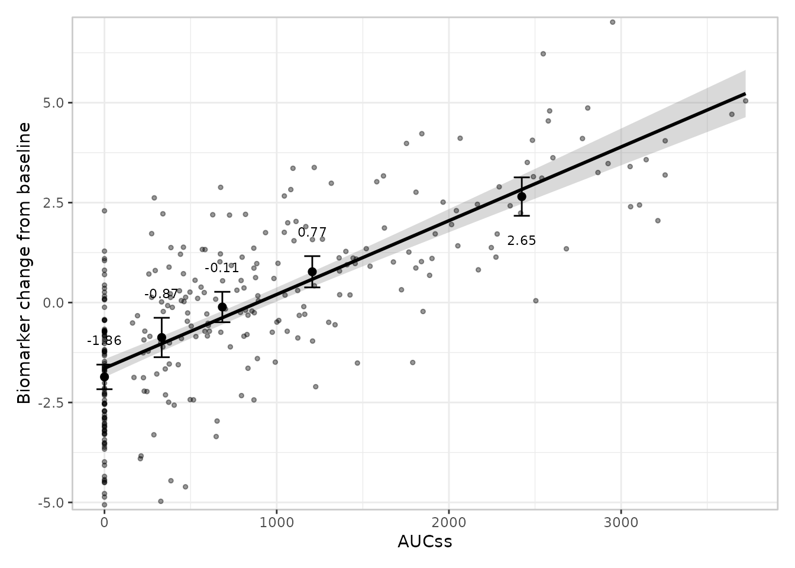
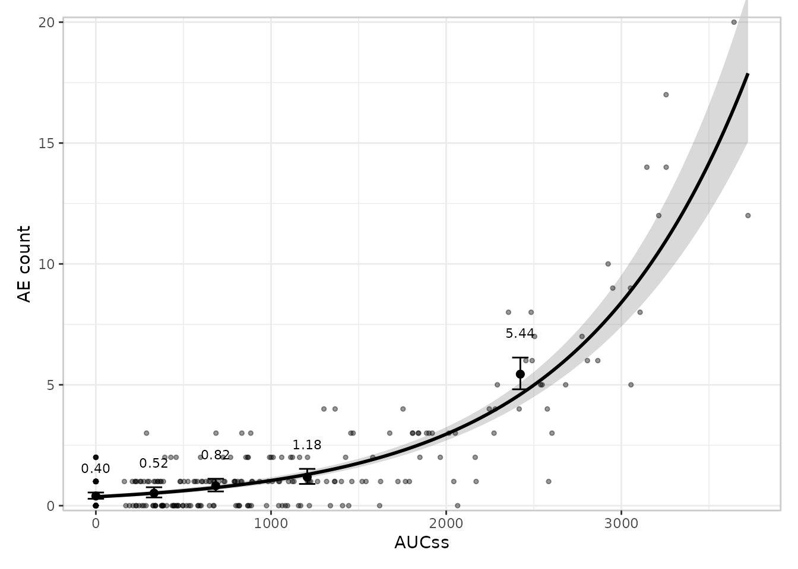
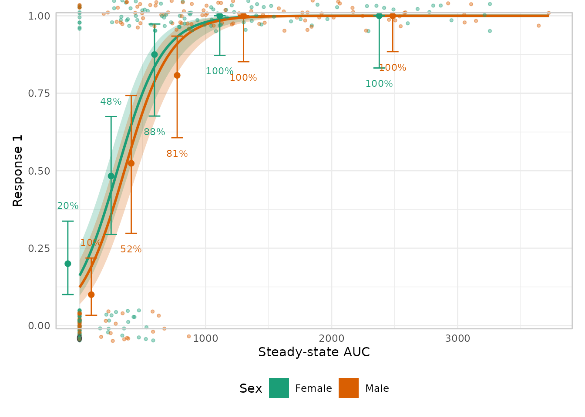

What erplots is for
An exposure-response plot shows how a response variable (does a
patient have an adverse event? how much does a biomarker change?)
relates to an exposure variable (maximum drug concentration, AUC, and so
on). The usual building blocks are a fitted curve with an uncertainty
band, some quantile-binned summary points to check the curve against the
raw data, the raw data itself, and maybe some side panels showing how
exposure is distributed across other variables of interest. erplots
gives you a small set of functions for assembling exactly that, layer by
layer, in a style that should feel familiar if you’ve used ggplot2’s
+ to build up a plot.
The one thing erplots deliberately does not do is fit models. You fit a model with whatever tool suits the job – logistic regression, generalised linear models, non-linear least squares, or a package purpose-built for exposure-response modelling – and then hand the fitted object to erplots. As long as that object can produce predictions in the way erplots expects (more on this at the end), the plotting code doesn’t care what kind of model it is.
This vignette works through the pieces one at a time, using erglm, a companion package
that fits simple exposure-response models and provides an example
dataset, erglm_data. You don’t need erglm to use
erplots on your own models, but it’s a convenient way to get a fitted
model for these examples.
erglm_data has an exposure column, aucss,
and several response columns of different kinds:
ae1/ae2 are binary (did an adverse event
occur?), biomarker_change is continuous, and
ae_count is a count. It also has some
grouping/stratification columns, sex and
treatment. We’ll start with ae1.
mod <- erglm_model(ae1 ~ aucss, erglm_data, family = binomial())Building a plot, one layer at a time
The empty canvas
Every erplots plot starts with er_plot(), which tells
erplots which column is the exposure and which is the response. On its
own it doesn’t draw anything – it’s just bookkeeping, the same way
ggplot(df, aes(x, y)) doesn’t draw anything until you add a
geom:
erglm_data |>
er_plot(exposure = aucss, response = ae1)
#> <er_plot>
#> plot variables:
#> - exposure: aucss
#> - response: ae1
#> - stratification: <none>
#> plot layers: <none>
#> plots built: <none>
#> output built: noIn fact, this particular code doesn’t draw anything at all. One point
of difference between erplots and ggplot2 is that print()
doesn’t render the plot: all it does is print out a summary of your plot
specification. If you want to render the plot, you need to explicitly
add plot() to the end of your pipeline:

As you can see, at this stage the output is little more than a blank canvas.
Adding the fitted curve
er_plot_add_model() draws the model’s fitted curve, with
a confidence ribbon around it. This is where the fitted model you built
earlier comes in:
erglm_data |>
er_plot(exposure = aucss, response = ae1) |>
er_plot_add_model(mod) |>
plot()Adding a quantile-binned summary
Fitted curves are easier to trust when you can check them against a
simple, model-free summary of the raw data.
er_plot_add_quantiles() splits the exposure range into bins
of roughly equal size and, within each bin, plots the observed response
rate (or mean, for a continuous or count response) with a confidence
interval:
erglm_data |>
er_plot(exposure = aucss, response = ae1) |>
er_plot_add_model(mod) |>
er_plot_add_quantiles() |>
plot()
You can change the number of bins with the bins
argument, e.g. er_plot_add_quantiles(bins = 6).
Adding the raw data
er_plot_add_data() overlays the individual observations
on top of the curve. For a binary response the points are jittered
vertically a little, since the underlying values are exactly 0 or 1 and
would otherwise draw as two solid lines:
erglm_data |>
er_plot(exposure = aucss, response = ae1) |>
er_plot_add_model(mod) |>
er_plot_add_quantiles() |>
er_plot_add_data() |>
plot()
Adding a summary annotation
er_plot_add_summary() places a small text annotation in
the corner of the plot that has the least data in it. The default draws
the model’s headline p-value, if it has one:
erglm_data |>
er_plot(exposure = aucss, response = ae1) |>
er_plot_add_model(mod) |>
er_plot_add_quantiles() |>
er_plot_add_summary(model = mod) |>
plot()
Adding grouped exposure panels
The layers above all describe the response.
er_plot_add_groups() instead shows how exposure
itself is distributed, split by one or more other variables –
useful for checking, say, whether exposure differs by treatment arm. It
adds a small boxplot panel below the main plot, and unlike the other
layers you can call it more than once to add several panels side by
side:
erglm_data |>
er_plot(exposure = aucss, response = ae1) |>
er_plot_add_model(mod) |>
er_plot_add_quantiles() |>
er_plot_add_groups(group_by = treatment) |>
plot()
Putting it all together
Every layer above is optional, and you can mix and match them in any combination. A fairly complete plot might look like this:
erglm_data |>
er_plot(exposure = aucss, response = ae1) |>
er_plot_add_model(mod) |>
er_plot_add_quantiles() |>
er_plot_add_data() |>
er_plot_add_summary(model = mod) |>
er_plot_add_groups(group_by = c(treatment, sex)) |>
plot()
Comparing groups with colour
If you’d like to compare, say, two treatment arms on the same plot,
pass stratify_by to er_plot(). This adds a
colour (and, where relevant, fill) aesthetic to every layer, with one
shared legend. Because the curve now needs to differ between groups, the
model you pass in should include the stratification variable as a
predictor:
mod_strat <- erglm_model(ae1 ~ aucss + sex, erglm_data, family = binomial())
erglm_data |>
er_plot(exposure = aucss, response = ae1, stratify_by = sex) |>
er_plot_add_model(mod_strat) |>
er_plot_add_quantiles() |>
er_plot_add_data() |>
plot()
Continuous and count responses
Everything above works the same way for a continuous response (e.g. a change from baseline in some biomarker) or a count response (e.g. the number of adverse events a patient experienced). erplots figures out which kind of response you have from the data, and adjusts the quantile summary accordingly – a mean and interval instead of a rate:
mod_cont <- erglm_model(biomarker_change ~ aucss, erglm_data, family = gaussian())
erglm_data |>
er_plot(exposure = aucss, response = biomarker_change) |>
er_plot_add_model(mod_cont) |>
er_plot_add_quantiles() |>
er_plot_add_data() |>
plot()
For a genuine count response, it’s worth telling erplots explicitly
via response_type = "count", so that it uses an interval
designed for counts rather than treating it as an ordinary continuous
measurement:
mod_count <- erglm_model(ae_count ~ aucss, erglm_data, family = poisson())
erglm_data |>
er_plot(exposure = aucss, response = ae_count, response_type = "count") |>
er_plot_add_model(mod_count) |>
er_plot_add_quantiles() |>
er_plot_add_data() |>
plot()
Theming
Everything above changes what’s drawn.
er_plot_theme() changes how it looks, without
remapping any aesthetic: axis/legend labels, a plot title, axis limits,
the overall ggplot2 theme, a discrete color/fill palette for
stratification, and more.
erglm_data |>
er_plot(exposure = aucss, response = ae1, stratify_by = sex) |>
er_plot_add_model(mod_strat) |>
er_plot_add_quantiles() |>
er_plot_add_data() |>
er_plot_theme(
xlab = "Steady-state AUC",
theme_base = ggplot2::theme_minimal(),
color_discrete = ggplot2::scale_color_brewer(palette = "Dark2"),
fill_discrete = ggplot2::scale_fill_brewer(palette = "Dark2")
) |>
plot()
See Theming erplots for every argument
er_plot_theme() supports.
Where to next
This vignette only shows the default look for each layer. Every layer also has one or more alternative styles you can switch to – spaghetti plots instead of a ribbon, violin plots instead of boxplots, a density-style overlay for the raw data when you have a lot of points, and so on – and you can write your own if none of the built-in options fit. From here:
- Plotting binary responses, plotting continuous responses, and plotting count responses walk through every layer and every built-in style in detail, for each response type.
- The plotting grammar explains the design rules behind the mini-language – which layers can appear more than once, how stratification interacts with each layer, and so on.
-
Theming erplots covers every
er_plot_theme()argument in detail – labels, limits, the visual theme, the stratification palette, formatters, and panel heights. - Extending erplots shows how to write your own layer style, and what erplots expects from a model object if you want to plug in one that isn’t erglm.
- Model interface describes the technicalities. It outlines what erplots needs from other packages in order to be able to use its models when drawing exposure-response plots.